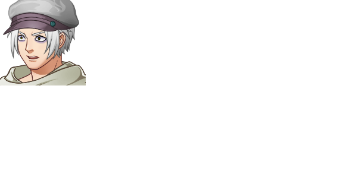

| Zilarra | |
 | |
| Attributes | |
| Name Meaning: | silver |
| Unique Ability: | Unknown |
| Location: | West Ward |
| Role: | NPC (Chapter Seven) |
| Affiliation: | Slums Faction |
| First Appearance: | Chapter Seven |
| Typing Style: | Normal. |
| Music Theme(s): | None |
| Details | |
| Species: | Game Character (Humanoid) |
| Gender: | Male |
| Eye Color: | Yellow |
| Hair Color: | Silver |
| Status: | Alive |
Zilarra is smarmy but generally has good intentions.
Zilarra asks the party to help himself and Urrun escape the West Ward and defeat Haizea.
Zilarra has no known combat abilities.
Urrun is friends with Zilarra, and they both want to escape the West Ward.
| This page is in the folowing categories: Male Characters, Game Characters, Humanoid |